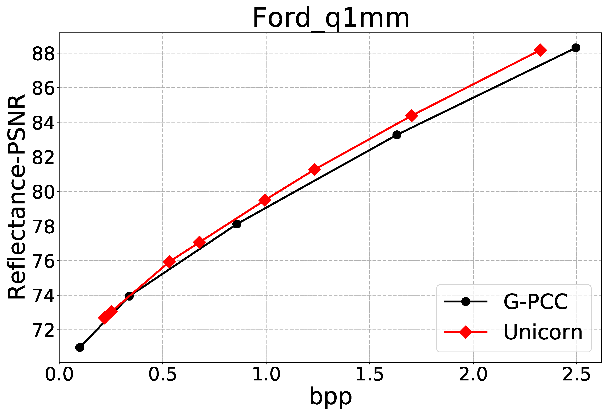
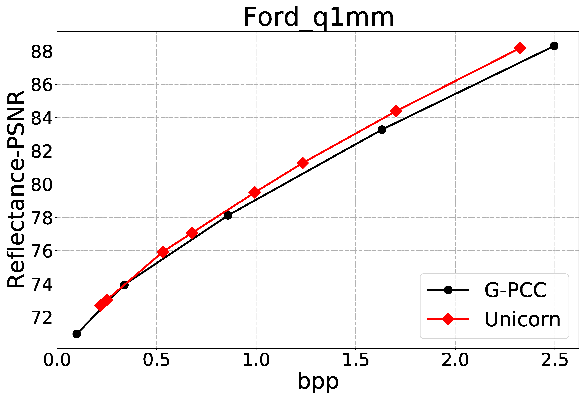

A universal multiscale conditional coding framework,
Unicorn,
is proposed to compress the geometry and attribute of any given point cloud.
Geometry compression is addressed in
Part I of this paper,
while attribute compression is discussed in
Part II.
For
geoemtry compression, we construct the multiscale sparse tensors
of each voxelized point cloud frame
and properly leverage lower-scale priors in the current
and (previously processed) temporal reference frames
to improve the conditional probability approximation
or content-aware predictive reconstruction of geometry occupancy in compression.
For
attribute compression, Since attribute components exhibit
very different intrinsic characteristics
from the geometry element, e.g., 8-bit RGB color versus 1-bit occupancy,
we process the attribute residual between lower-scale reconstruction
and current-scale data.
Similarly, we leverage spatially lower-scale priors in the current frame and
(previously processed) temporal reference frame to improve the probability
estimation of attribute intensity through conditional residual prediction
in lossless mode or enhance the attribute reconstruction through
progressive residual refinement in lossy mode for better performance.
The porposed Unicorn is a versatile,
learning-based solution capable of compressing
static and dynamic point clouds with diverse source characteristics
in both lossy and lossless modes. Following the same evaluation criteria,
Unicorn significantly outperforms standard-compliant approaches
like MPEG G-PCC, V-PCC, and other learning-based solutions, yielding
state-of-the-art compression efficiency while presenting
affordable complexity for practical implementations.


 
